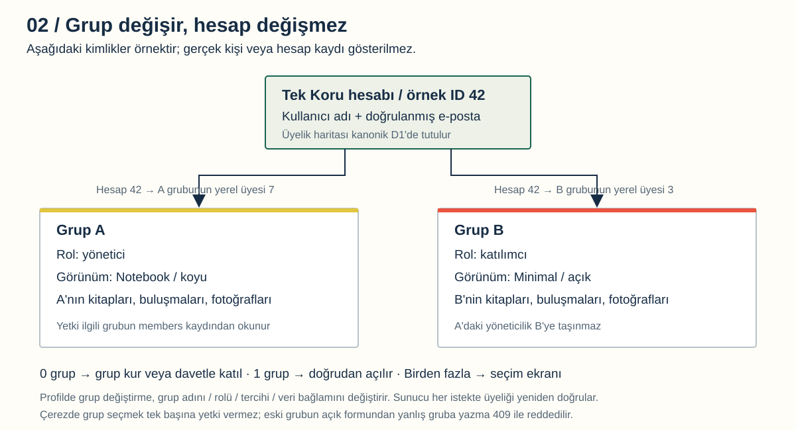
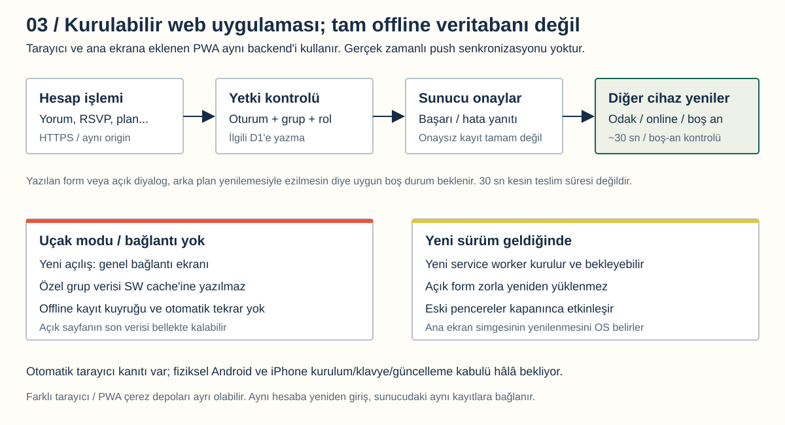
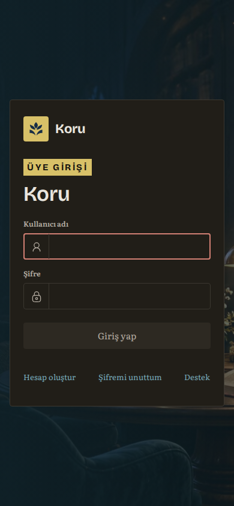
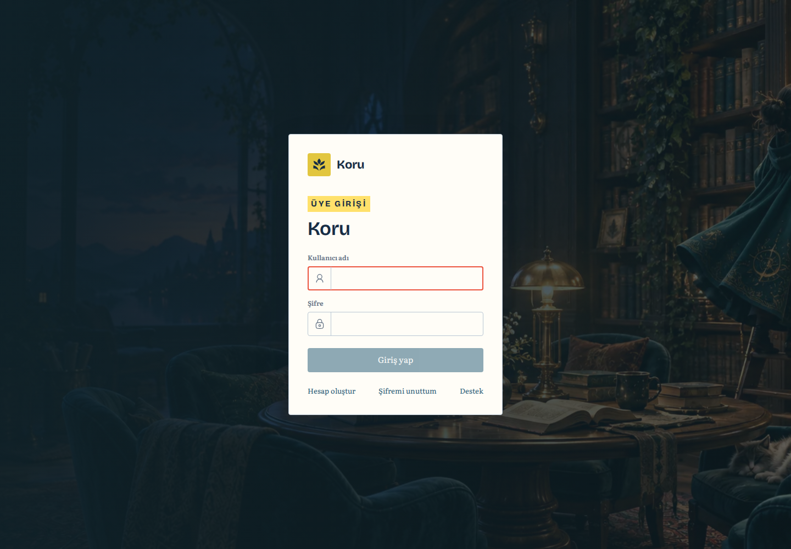

Neyin nerede çalıştığı, hesabın gruplardan nasıl ayrıldığı, verilerin nerede tutulduğu ve genel açılıştan sonra hangi işlerin kaldığı.
Koru yayında; bütün üretim kabul maddeleri kapanmış değil. İlk kamuya açık yayın operatör kararıyla yapıldı. Otomatik test başarısı, gerçek telefon/posta veya bağımsız güvenlik kabulü diye sunulmadı.
23:18 TRT ek yayını: ortak grup depolaması canlıda. Yeni gruplar kanonik D1'de grup kimliğiyle ayrılıyor; eski grup depoları ve üç DB bağlantısı korundu. Toplam üç grup/havuz darboğazı kaldırıldı; hesap ve hizmet kotaları sürüyor. Kaynak d6a1c4d. Aşağıdaki sayaçlar ve diyagramlar 17:52 TRT tarihli ilk envanterdir, yeni grup sayacı değildir. Yeni mimari ve yayın kanıtları. On üç manuel kabul başlığı hâlâ bekliyor; bu güncellemeye özel risk kararı tüketildi.
Mevcut hesap
6
Kayıtlı grup
1
Boş yeni grup slotu
2
Üretim D1
3
17:52 TRT salt okunur toplam sayaçları. Kullanıcı adı, e-posta veya özel içerik okunmadı. Sayılar daha sonra değişebilir.
01 / Sistem nasıl çalışıyor?
birkoru.com tek uygulama adresi. Telefon, bilgisayar ve ana ekrana eklenen PWA aynı sunucu kayıtlarına bağlanıyor. Kalıcı bir Ubuntu/Express sunucusu yerine Cloudflare Worker çalışıyor.
Destek Gmail'de, üretim hesap postası Firebase'de. Önceki Gmail OAuth denemesi staging içindi. Eski Google OAuth “Publish app” konusu şu anki üretim parola doğrulamasının çözümü değil.
Turnstile kayıt/kurtarma güvenliğinde; Open Library kitap aramasında/kapaklarda kullanılıyor. Firebase Analytics, WebSocket veri senkronizasyonu ve sunucudan anlık push bu mimaride yok.
02 / Tek hesap, farklı gruplar

Sayılar temsili. Gerçek kişisel veri gösterilmiyor. Tam boy.
Kanonik D1
Ortak hesap, e-posta/Firebase eşlemesi, üyelikler, görünüm tercihleri, davetler, ilk tur ve silme kayıtları burada.
Eski/default grubun içerikleri de aynı fiziksel DB'de. Bu veri taşınmadı veya sıfırlanmadı; geçişte 13 eski tablo/75 satır ve medya birebir korundu, 21 yeni tablo eklendi.
Yeni grup D1'leri
İki kalıcı boş havuz var. Yeni gruba bir DB ayrılır; yerel üyeler, roller, kitaplar, buluşmalar ve medya orada tutulur. Merkezi parola/oturumlar bu DB'lere kopyalanmaz.
Grup kurma isteği Cloudflare hesabında sınırsız yeni DB oluşturmaz. Hazır slot bittiğinde kapasite kararı gerekir.
Veri
Depo / davranış
Yeni parola
Firebase doğrular; Koru yeni hash yazmaz. Parola HTTPS ile Worker belleğinden geçip sağlayıcıya gider; loglanmaz.
Eski parola özeti
Sahibi Firebase'e doğrulanmış bağlanmayı tamamlayana kadar kanonik D1'de.
Grup tercihi
Hesap + grup üyeliğinde şema/açık-koyu; cihazdaki görünüm depolaması tek kaynak değil.
Grup rolü
O grubun yerel üyesinden okunur. Başka grubun yöneticiliği taşınmaz.
İçerik ve fotoğraf
Seçili grubun D1'i; eski grup için kanonik DB. R2/S3 değil.
Oturum
HttpOnly uygulama çerezi, D1'de AES-GCM ile şifreli sağlayıcı tutamacı. Firebase tokenı tarayıcı localStorage'ında değil.
Yedek
Git dışı şifreli yerel dosya ve ayrı anahtar dosyası. İkisi aynı bilgisayarda; cihaz kaybı çözülmüş değil.
Sunucudaki erişim zinciri
Oturum → aktif hesap → aktif grup üyeliği → izinli DB bağlantısı → doğru DB grup sahipliği → yerel üye/rol. Çerezde bir grup ID'si yazmak yetki vermez. Yazmalarda aynı origin ve X-Reading-Group eşleşmesi gerekir; eski formdan yanlış gruba yazma reddedilir.
0 grup: kur/katıl. 1 grup: doğrudan açılır. Birden fazla: seçim ekranı. Profilde geçiş hesabı değiştirmez; grup adı, veri, rol ve tasarım tercihi değişir. Koru adı, onaylı kitap/yaprak logo ve kamusal sosyal görsel sabit kalır.
Yeni ve eski hesaplar
Yeni hesapta sunucu girdi/origin/rate-limit/Turnstile kontrolünden sonra Firebase akışı yürür; e-posta sahipliği doğrulanır. Üyelik ayrı adımdır. Eski altı hesap otomatik ithal edilmedi: mevcut parola, güçlü yeni parola ve doğrulanmış yeni UID ile bağlanır; eski ID/rol/içerikler korunur.
RS256 imza/proje/süre kontrollerinin yanında güncel sağlayıcı hesabı/iptal durumu da kontrol edilir. Sağlayıcı kesilince doğrulanmamış kimliğe sessiz düşüş yoktur. Bu güvenlik kararının gerçek üretim kullanıcı akışı ayrıca kabul edilmelidir.
HTTPS var ama uçtan uca şifreleme yok. Teknik işletmeci içeriklere erişebilir. Yalnız Türkiye'de saklama veya hukuki uygunluk garantisi verilmiyor.
03 / Senkronizasyon, offline ve güncelleme

Kurulabilir web uygulaması, tam offline uygulama ile aynı değil. Tam boy.
Kalıcı kayıt sunucuda. Diğer cihaz/pencere odak, online olma ve yaklaşık 30 saniyelik uygun boş-an kontrolüyle yeniler. Açık form ve kaydedilmemiş metin yenilemeyle ezilmesin diye beklenebilir. Bu süre anlık push ya da kesin senkronizasyon SLA'sı değildir.
İnternet kesilirse
Yeni açılışta genel offline/bağlantı ekranı gelir. Özel grup/API/fotoğraflar service-worker cache'ine alınmaz. Açık sekmenin son verisi RAM'de görülebilir; yeni kalıcı yazma yoktur. Bağlantı dönünce başarısız POST otomatik tekrarlanmaz.
Yeni sürüm gelirse
Yeni service worker kurulup bekleyebilir. Açık form zorla yenilenmez; eski Koru pencereleri kapanınca yeni sürüm etkinleşir. Ana ekran simgesinin ne zaman değişeceğini işletim sistemi belirler. Fiziksel Android ve iPhone kabulü hâlâ gerekir.
Yeni domain farklı origin'dir: eski kurulum/çerez otomatik taşınmaz, yeniden giriş veya yeni adresten kurulum gerekebilir. Bu sunucu verisinin kaybolması değildir.
Yayındaki kamusal yüz

390 px / koyu

1440 px / açık. Bu ekran görüntüleri bütün özel ekranların insan kabulü değildir.
Önceki tek-DB uzak restore ve taze şifreli yedek var. Düzenli üç-DB kurtarma/cihaz kaybı senaryosu tamamlanmış değil.
Standart insan/cihaz kapısı
13 başlık bekliyor
İlk açılışın ayrı operatör kararı bunları başarılıya çevirmedi. Sonraki sürümler için standart kapı kullanılmalı.
HTTPS testinde sistem DNS'i eski/NXDOMAIN yanıtı verirken güncel genel DNS kullanıldı; doğru alan adı ve normal sertifika doğrulaması korundu. Sistem-DNS hata raporu ayrı tutuldu. Her ağın yayılımı tamamlandı varsayılmadı.
Bu rapor için kabul testleri tekrarlanmadı; yalnız taze salt okunur ayar/şema ve toplam kapasite envanteri alındı. Yayın kaynak commit'i 1c1b235; mevcut belgeler daha yeni olabilir.
05 / Geriye ne kaldı?
Öncelikler mühendislik değerlendirmesi. P0: kullanıcı/veri güvenilirliği ve büyümeden önce işletim. P1: kalite ve kabulü kapatma. P2: sonraki ürün kapsamı. Bekleyen madde, mutlaka bulunmuş bir hata demek değildir.
R01P0
Gerçek üretim hesabı ve postası
Kayıt, e-posta doğrulama, giriş, reset, yeni parolayla giriş ve eski oturumun reddi zinciri üretim sağlayıcısıyla kabul edilmeli. Spam/gecikme, süresi geçmiş bağlantı ve sağlayıcı kesintisi de dahil.
Kod/test altyapısı var; gerçek üretim teslimi kanıtı yok. Önceden reddedilen uzak test hesabı/posta kendiliğinden oluşturulmayacak.
R02P0
Eski hesap geçişi ve iki gerçek kullanıcıyla grup kabulü
Eski ID/içerik/rol korunarak bağlanma; grup kurma, son davet slotu, iptal, grup geçişi ve farklı rollerde veri izolasyonu gerçek kullanım üzerinden kayıt altına alınmalı.
Yerel çoklu grup ve sentetik sağlayıcı testleri geçti; bütün gerçek üretim akışı test edildi denmiyor.
R03P0
Kalıcı silmenin işletime alınması
Silme talebi/iptal ekranı, operatör API/CLI'si ve Firebase→D1 checkpoint akışı var. Google yetkili kullanıcı ADC'si henüz kurulmuş değil. Kuyruk takibi, içerik incelemesi, bakım/drain, son-yönetici devri ve tamamlanmış/retry silme kabulü gerekiyor.
Talep vermek otomatik silinmek değildir. Ortak içerik veya uygun halef yoksa işlem güvenli biçimde durabilir. Gerçek kullanıcı silinmedi.
R04P0
Yedek, anahtar ve üç-DB felaket kurtarma
Düzenli çoklu-DB yedekleme, cihaz dışı anahtar/yedek saklama, saklama takvimi, RPO/RTO ve eski yedekten silinmiş hesabı canlandırmamak için bağımsız silme günlüğü tekrarı gerekiyor.
Yedek ve anahtarı iki dosyada ama aynı bilgisayarda tutmak, bilgisayar kaybına dayanıklı yedekleme değildir.
R05P0
Kapasite, alarm ve büyüme kararı
İki boş grup slotu otomatik sınırsız kayıt kapasitesi sağlamaz. D1/Worker/medya/posta eşikleri, hata/CPU uyarıları, destek sorumlusu ve havuz dolunca uygulanacak süreç gerekli.
Staging DB'leri silinmez; plan/kota artırma, ücret veya veri taşıma onaysız yapılmaz.
R06P0
Main, CI ve korumalı yayın zinciri
Çalışan kaynak çalışma dalında. Main'e kontrollü birleştirme ve Cloudflare otomatik build tetikleyicisi denetimi gerekli. Test CI'si var; insan kanıtı/standart kapı/production onayı deploy yolunda zorunlu hale getirilmeli.
Mevcut CI son gate'i Android sonucunu da istiyor; web önceliği için yayın kuralı netleştirilmeli. GitHub panel korumaları koddan tek başına doğrulanamaz.
R07P0
Veri hakları, destek ve hukuki inceleme
Gerçek saklama süreleri, dış aktarım/sağlayıcı sözleşmeleri, dışa aktarma yanıtı, ortak içerik hakları ve güvenlik olayı/destek süreci incelenmeli. Self-service veri dışa aktarma henüz yok; destek üzerinden değerlendirme var.
Gizlilik/koşullar sayfasının bulunması hukuki uygunluk sertifikası değildir. Biyometri genel yayında kapalı.
R08P1
Gerçek Android ve iPhone PWA kabulü
Kurulum/standalone, oturum/grup değişimi, geri, gerçek klavye/safe-area, uçak modu ve kurulu sürüm güncellemesi ayrı cihazlarda doğrulanmalı.
Tarayıcı simülasyonu veya native emülatör testi bunun yerine geçmez.
R09P1
Gerçek sosyal paylaşım kartları
WhatsApp, Telegram ve hedef sosyal ağlarda gerçek URL önizlemesi, dar kırpma ve önbelleğin tekrar taranması kontrol edilmeli.
OG görseli/metadata ve yeni simgeler doğrulandı; platform kabulü bekliyor.
R10P1
Gerçek hız ve erişilebilirlik
Mobil cihaz/ağda oturumlu açılış, LCP/INP/CLS, sağlayıcı/DB gecikmesi; VoiceOver/TalkBack, klavye, 200% büyütme ve dört şemanın manuel son okuması gerekiyor.
Yerel performans ölçümü ve simülasyonlar var; “her telefonda X saniye” garantisi yok.
R11P1
Bağımsız güvenlik ve düşük/orta bağımlılık bulguları
Rol/tenant sınırı, CSRF/XSS, medya yükleme, rate-limit, sağlayıcı reset/iptal, log ve Secret yönetimi incelenmeli. Eski parola doğrulaması ve gerçek Free-runtime davranışı ayrı kabul edilmeli.
High/critical web bulgusu olmaması bağımsız incelemenin yerine geçmez; low/moderate uyarılar değerlendirilmeli.
R12P1
Eski belgeler ve beta runtime bakım disiplini
Tarihsel notlardaki “Firebase prototip”, “yayın kapalı”, “Gmail üretim postası” ifadeleri güncel durumla karıştırılmamalı. Bu rapor ve gerçek yayın kaydı güncel referans. vinext beta güncellemelerinde sabit sürüm/geri dönüş sözleşmesi korunmalı.
R13P2
Sonraki ürün kapsamı
Native iOS/Android ve mağaza yayını, gerçek zamanlı push, tam offline veri ve yazma kuyruğu ayrı projelendirme/kabul ister. Mevcut yayının tamamlanmış özellikleri diye anlatılmaz.
Standart kapıdaki 13 bekleyen kanıt adı Markdown raporda tek tek kayıtlı. Bu liste “migration yapılmadı” veya “hiç yedek yok” anlamına gelmez: yapılan teknik çalışma ile kapanmamış insan/işletim kabulü ayrı.
Şu an hesapta 8 DB: 3 üretim + 5 staging. Uygulamanın bağlı ve boş yeni-grup slotu yalnız 2.
Workers Free
100.000 istek / gün, 10 ms CPU / istek
Bu kullanıcı sayısı değil. Ağ bekleme süresi ile CPU farklı. Diğer Worker'ların tüketimi ve hata/CPU metrikleri izlenmeli.
Firebase Spark postası
Belgede doğrulama 1.000 / gün; reset 150 / gün
Projede kalan gerçek kota ölçülmedi; sağlayıcı ek korumalar uygulayabilir. Şablonun görünmesi teslim kanıtı değil.
Medya
Kodda 1.800.000 bayt yükleme sınırı; D1'de 2 MB satır/BLOB sınırı
Fotoğraflar büyüyünce DB boyutu/CPU/yedek süresi artar. Korumalı nesne depolamaya geçiş bugün yapılmış değil.
Bir DB/grup modeli izolasyonu kolaylaştırıyor ama ücretsiz planda grup sayısını sınırlıyor. Hazır slot artırma, ortak tenant DB modeli veya farklı depolama kararı ayrı tasarım ve veri koruma çalışmasıdır. Bu rapor ücretli plan açma onayı değildir.
Gerçek hesap/posta ve çoklu kullanıcı/grup kabulü. Ayrı onayla; mevcut veri ve reddedilen uzak test yetkileri korunarak.
Silme işletimi ve çoklu-DB kurtarma. Yetkili operatör, kuyruk, cihaz dışı anahtar, silme günlüğü ve geri dönüş provası.
Kapasite, destek, hukuki inceleme ve CI/production yayın sözleşmesi. Tekrar açılış istisnasına dayanmayan normal süreç.
Fiziksel PWA, sosyal kartlar, hız/erişilebilirlik ve güvenlik son kabulü. Eksik kanıtı gerçekten kapatmak.
Native ve diğer yeni özellikler. Web aşaması kabulünden sonra.
Bu incelemede deployment, uzak SQL/Secret değişikliği, gerçek hesap/posta veya ücretli hizmet oluşturulmadı. Sadece salt okunur teknik/sayaç kontrolü ve rapor üretildi.
Yayınlanan uygulama: 1c1b235d75e0162a1c1bd3b6387bb07ce5eececf. Bu belge bir canlı durum paneli değildir; yeni sürüm, grup havuzu veya sağlayıcı değiştiğinde tarih/snapshot yenilenmeli. Gizli değer veya kişisel içerik rapora alınmadı.